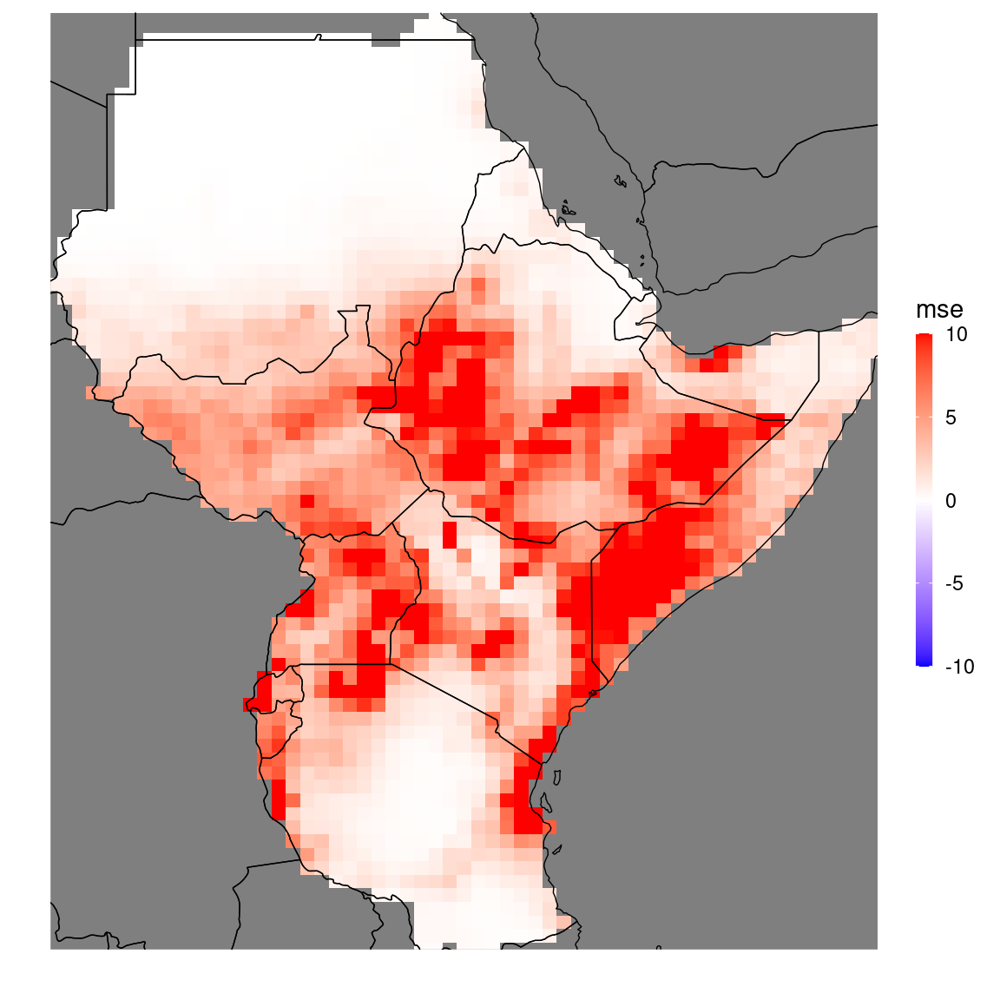

The SeaVal package for validating seasonal weather forecasts
1 Getting Started
This tutorial gives a short introduction how to use the R-package SeaVal for seasonal validation. You can download the package directly from github as described below.
It provides a toolkit to evaluate predictions, tailored to specific needs of ICPAC. SeaVal relies on R data tables (available with the R package data.table).
Data tables are more flexible and memory efficient data frames, and simplify many operations that are frequently required when working with weather- and climate data. An introduction to data tables can be found here: https://cran.r-project.org/web/packages/data.table/vignettes/datatable-intro.html.
The package SeaVal allows to import netcdf-files as data tables. Moreover, it contains functionality for generating a variety of diagnostic plots, and provides various tools for forecast evaluation. In this tutorial we’ll go over basic uses of this package, including examples for various evaluation scenarios.
1.1 Installation
In order to directly install the package from github, you need the package devtools:
This installs SeaVal and all packages it depends on. This may take a while, especially if you didn’t have some of the larger dependency packages installed, such as data.table or ggplot2.
Also, it is possible that you’ll get a message like this:
These packages have more recent versions available.
It is recommended to update all of them.
Which would you like to update?
1: All
2: CRAN packages only
3: None
...In that case just type ‘1’ for all.
If this completes without an error, the setup is complete and you’re good to go.
From here on out, all you have to do is load SeaVal:
## Loading required package: data.table## Loading required package: ForecastToolsEspecially in the early development phase, it is important to occasionally update the SeaVal package. To this end simply run the following commands every now and then:
1.2 examples of data.table syntax
Here, we show some examples of basic operations on data tables.
A short but comprehensive introduction to data.tables syntax can be found (here)[https://cran.r-project.org/web/packages/data.table/vignettes/datatable-intro.html].
The SeaVal package comes with a few example data sets, for example monthly mean precipitation over the GHA region for the OND season provided by CHIRPS:
## lon lat prec month year terc_cat
## 1: 22.0 -12.0 1.9301587 10 1981 -1
## 2: 22.0 -11.5 2.1351602 10 1981 -1
## 3: 22.0 -11.0 2.7692883 10 1981 -1
## 4: 22.0 -10.5 3.9201619 10 1981 0
## 5: 22.0 -10.0 4.8720656 10 1981 1
## ---
## 418076: 51.5 21.0 0.2404348 12 2020 -1
## 418077: 51.5 21.5 0.2184058 12 2020 -1
## 418078: 51.5 22.0 0.2053623 12 2020 -1
## 418079: 51.5 22.5 0.1615942 12 2020 -1
## 418080: 51.5 23.0 0.1387682 12 2020 -1We can look at a short description of the dataset like this:
We’ll now go over a few basic commands for handling this sort of data. chirps_monthly is a data_table, which is an enhanced data frame. The most fundamental operations include subsetting, performing calculations on columns and aggregation or grouping for calculations. Examples for subsetting are
## lon lat prec month year terc_cat
## 1: 22.0 -12.0 1.930158724 10 1981 -1
## 2: 22.0 -11.5 2.135160243 10 1981 -1
## 3: 22.0 -11.0 2.769288266 10 1981 -1
## 4: 22.0 -10.5 3.920161870 10 1981 0
## 5: 22.0 -10.0 4.872065602 10 1981 1
## ---
## 139356: 51.5 21.0 0.033333333 10 2020 -1
## 139357: 51.5 21.5 0.033333333 10 2020 0
## 139358: 51.5 22.0 0.032608688 10 2020 -1
## 139359: 51.5 22.5 0.001594238 10 2020 -1
## 139360: 51.5 23.0 0.000000000 10 2020 -1## lon lat prec month year terc_cat
## 1: 22.0 -12.0 3.1261905 10 1990 1
## 2: 22.0 -11.5 3.5520651 10 1990 1
## 3: 22.0 -11.0 3.9256340 10 1990 1
## 4: 22.0 -10.5 4.4879379 10 1990 1
## 5: 22.0 -10.0 4.4143639 10 1990 0
## ---
## 104516: 51.5 21.0 0.2565218 12 1999 0
## 104517: 51.5 21.5 0.2427537 12 1999 1
## 104518: 51.5 22.0 0.2171015 12 1999 1
## 104519: 51.5 22.5 0.2000000 12 1999 1
## 104520: 51.5 23.0 0.1981884 12 1999 1## lon lat prec month year terc_cat
## 1: 29 -9.5 1.74899961 10 1981 0
## 2: 29 -9.0 1.44546648 10 1981 -1
## 3: 29 -8.5 1.45933371 10 1981 -1
## 4: 29 -8.0 1.52153314 10 1981 -1
## 5: 29 -7.5 1.35046587 10 1981 -1
## ---
## 997: 36 -8.5 0.49439943 10 1981 0
## 998: 36 -8.0 0.31293185 10 1981 0
## 999: 36 -7.5 0.06879925 10 1981 -1
## 1000: 36 -7.0 0.01446661 10 1981 -1
## 1001: 36 -6.5 0.04019988 10 1981 0## lon lat prec month year terc_cat
## 1: 30.5 -10.5 0.67720063 10 1981 0
## 2: 30.5 -10.0 0.78526832 10 1981 0
## 3: 30.5 -9.5 1.03640187 10 1981 0
## 4: 30.5 -9.0 0.96939957 10 1981 0
## 5: 30.5 -8.5 0.52219994 10 1981 0
## ---
## 32909: 51.0 20.0 0.06666667 10 2020 0
## 32910: 51.0 21.5 0.03333333 10 2020 0
## 32911: 51.5 19.5 0.06666667 10 2020 0
## 32912: 51.5 20.0 0.06666667 10 2020 0
## 32913: 51.5 21.5 0.03333333 10 2020 0## lon lat prec month year terc_cat
## 1: 30.5 -10.5 0.67720063 10 1981 0
## 2: 30.5 -10.0 0.78526832 10 1981 0
## 3: 30.5 -9.5 1.03640187 10 1981 0
## 4: 30.5 -9.0 0.96939957 10 1981 0
## 5: 30.5 -8.5 0.52219994 10 1981 0
## ---
## 32909: 51.0 20.0 0.06666667 10 2020 0
## 32910: 51.0 21.5 0.03333333 10 2020 0
## 32911: 51.5 19.5 0.06666667 10 2020 0
## 32912: 51.5 20.0 0.06666667 10 2020 0
## 32913: 51.5 21.5 0.03333333 10 2020 0We can subset either by logical expressions or by row indices (third example above). Subsetting always returns a data table, e.g. chirps_monthly[1] returns a one-row data table containing the first row of chirps_monthly.
Next, let’s look at examples for operations on columns:
## [1] 1.995215chirps_monthly[,mean_prec := mean(prec)] # create a new column in the data table containing the mean
chirps_monthly[,prec := 30*prec] # transform precipitation from unit mm/day to mm (per month)
print(chirps_monthly)## lon lat prec month year terc_cat mean_prec
## 1: 22.0 -12.0 57.904762 10 1981 -1 1.995215
## 2: 22.0 -11.5 64.054807 10 1981 -1 1.995215
## 3: 22.0 -11.0 83.078648 10 1981 -1 1.995215
## 4: 22.0 -10.5 117.604856 10 1981 0 1.995215
## 5: 22.0 -10.0 146.161968 10 1981 1 1.995215
## ---
## 418076: 51.5 21.0 7.213044 12 2020 -1 1.995215
## 418077: 51.5 21.5 6.552173 12 2020 -1 1.995215
## 418078: 51.5 22.0 6.160868 12 2020 -1 1.995215
## 418079: 51.5 22.5 4.847827 12 2020 -1 1.995215
## 418080: 51.5 23.0 4.163046 12 2020 -1 1.995215Note in all cases the ‘,’ after ‘[’ which tells data table that you’re doing an operation rather than trying to subset. We can also put things together and subset and operate simultaneously:
## [1] 66.30285(Note that the mean is much larger now because we changed units…) Finally, and most importantly, we can perform operations over aggregated groups:
## lon lat month V1
## 1: 22.0 -12.0 10 84.507765
## 2: 22.0 -11.5 10 92.716755
## 3: 22.0 -11.0 10 104.027108
## 4: 22.0 -10.5 10 116.425850
## 5: 22.0 -10.0 10 128.969907
## ---
## 10448: 51.5 21.0 12 7.679457
## 10449: 51.5 21.5 12 7.247609
## 10450: 51.5 22.0 12 6.454131
## 10451: 51.5 22.5 12 5.612391
## 10452: 51.5 23.0 12 5.103941Here, the ‘by’ command (after the second comma) tells data table to perform the operation (mean) for each instance of lon, lat, and month separately. As a result, the mean is taken only over all years and we obtain the monthly local climatology. As we can see, the output is a data table containing all columns in by and a column named V1 containing the output of the operation. That’s of course a bit impractical. But it’s easy to rename columns:
It’s also possible to name the column direcly while dt_new is created, like this:
dt_new = chirps_monthly[,.(clim = mean(prec)),by = .(lon,lat,month)]
# same as above, but with simultaneously setting the name of the new columnThis can again be combined with subsetting:
dt_new = chirps_monthly[year %in% 1990:2020, .(clim = mean(prec)), by = .(lon,lat,month)]
# computes climatology based on the years 1990-2020 only.In the examples above we create a new data table containing the climatology. If we instead want to add the climatology as a new column to chirps_monthly directly, we need to use the := operator:
This showcases some of the main functionalities and syntax of the data.table package. As mentioned above, it is strongly recommended to have a look at
(this introduction to data.table)[https://cran.r-project.org/web/packages/data.table/vignettes/datatable-intro.html], which introduces many more commands and properly explains the logic underlying data.tables syntax.
We’ll finish this section by an example where we compute the MSE for raw ecmwf forecasts:
data("chirps_monthly") # reload data to reverse the changes made in the examples above.
data("ecmwf_monthly") # get example hindcasts from ecmwf
print(ecmwf_monthly) ## lon lat year month prec member below normal above
## 1: 22 13.0 1993 10 0.0118023199 1 0.60 0.20 0.20
## 2: 22 13.0 1993 10 0.0257743523 2 0.60 0.20 0.20
## 3: 22 13.0 1993 10 0.0008075972 3 0.60 0.20 0.20
## 4: 22 13.0 1993 10 0.1190863216 4 0.60 0.20 0.20
## 5: 22 13.0 1993 10 0.0002728474 5 0.60 0.20 0.20
## ---
## 868556: 51 11.5 2020 12 0.8410410288 1 0.36 0.28 0.36
## 868557: 51 11.5 2020 12 0.7719732821 2 0.36 0.28 0.36
## 868558: 51 11.5 2020 12 1.4691380784 3 0.36 0.28 0.36
## 868559: 51 11.5 2020 12 1.2364573109 4 0.36 0.28 0.36
## 868560: 51 11.5 2020 12 1.2289135981 5 0.36 0.28 0.36# merge observations and predictions into a single data table:
setnames(chirps_monthly,'prec','obs')
# rename the 'prec' column in the observation data table to 'obs',
# in order to avoid name clashes, since ecmwf_monthly also contains a column 'prec',
# containing the predictions for precip.
dt = merge(ecmwf_monthly,chirps_monthly,
by = c('lon','lat','year','month'))
# merge hindcasts and observations into one data table.
print(dt)## lon lat year month prec member below normal above obs
## 1: 22 13.0 1993 10 0.0118023199 1 0.60 0.20 0.20 0.3490475
## 2: 22 13.0 1993 10 0.0257743523 2 0.60 0.20 0.20 0.3490475
## 3: 22 13.0 1993 10 0.0008075972 3 0.60 0.20 0.20 0.3490475
## 4: 22 13.0 1993 10 0.1190863216 4 0.60 0.20 0.20 0.3490475
## 5: 22 13.0 1993 10 0.0002728474 5 0.60 0.20 0.20 0.3490475
## ---
## 868556: 51 11.5 2020 12 0.8410410288 1 0.36 0.28 0.36 0.5262209
## 868557: 51 11.5 2020 12 0.7719732821 2 0.36 0.28 0.36 0.5262209
## 868558: 51 11.5 2020 12 1.4691380784 3 0.36 0.28 0.36 0.5262209
## 868559: 51 11.5 2020 12 1.2364573109 4 0.36 0.28 0.36 0.5262209
## 868560: 51 11.5 2020 12 1.2289135981 5 0.36 0.28 0.36 0.5262209
## terc_cat
## 1: 0
## 2: 0
## 3: 0
## 4: 0
## 5: 0
## ---
## 868556: 0
## 868557: 0
## 868558: 0
## 868559: 0
## 868560: 0dt[,ens_mean := mean(prec),by = .(lon,lat,year,month)]
# get the ensemble mean as a new column.
# The mean is here grouped over all dimension variables excluding 'member',
# therefore the ensemble mean is returned. In other words, a separate mean
# is calculated for every instance of lon, lat, year and month.
mse_dt = dt[,.(mse = mean((prec-obs)^2)), by = .(lon,lat,month)] # create a new data.table containing the mse by location and month
print(mse_dt)## lon lat month mse
## 1: 22.0 13.0 10 7.263275e-01
## 2: 22.0 13.0 11 2.330523e-03
## 3: 22.0 13.0 12 4.717186e-05
## 4: 22.5 12.5 10 1.100971e+00
## 5: 22.5 12.5 11 8.114504e-03
## ---
## 6200: 51.0 11.0 11 2.520367e+00
## 6201: 51.0 11.0 12 1.086045e+00
## 6202: 51.0 11.5 10 1.304131e+00
## 6203: 51.0 11.5 11 3.431530e+00
## 6204: 51.0 11.5 12 1.362873e+00
The function ggplot_dt is used to create spatial plots from data stored in data tables. The next section to this function and how the generated plots can be manipulated.